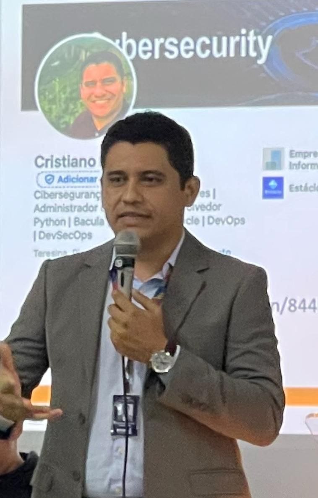
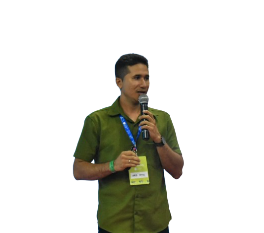
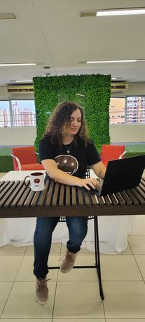

IFPI Teresina - Campus Central
20/06/2025
Sexta-feira
| Horário | Atividade | Sala | Ministrante(s) |
|---|---|---|---|
| 09h00 | Abertura de portões e credenciamento com coffee-break | - | - |
| 09h30 | Tutorial Desenvolvendo honeypots com Python (Parte 1) | Lab C2-03 |  Cristiano Altino |
| Tutorial Predição de surtos de casos de dengue utilizando IA e banco de dados | Lab B3-10 | Sulamita Dantas | |
| Tutorial Introdução às Abordagens de Aprendizado de Máquina | Lab B3-11 | Ariana Cursino | |
| Tutorial Visualização de Dados em Python com Google Colab | Lab B3-12 |  Marcos Resende | |
| Tutorial Tornando a Qualidade parte do processo | Lab C2-04 | Lia Mariana | |
| 12h30 | Almoço | - | - |
| 14h00 | Tutorial Desenvolvendo honeypots com Python (Parte 2) | Lab C2-03 | Cristiano Altino |
| Tutorial Flask: do básico até a API | Lab B3-11 |  Alynne Ferreira | |
| Tutorial MinIO em Python: Transformando Dados em Soluções | Lab B3-12 | Bruno Cordeiro | |
| Tutorial Blockchain para Pythonistas: Do Zero ao Smart Contract | Lab B3-18 |
Maria do Rosário Pedro Filipe |
|
| Tutorial Performance e desenvolvimento de APIs | Lab C2-04 | Hipolito Junior | |
| 17h00 | Coffee-break e encerramento do dia | - | - |